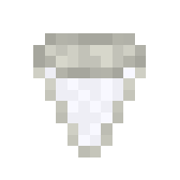
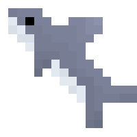

Great White Shark
Great white sharks are predatory creatures that reside in most oceans. When encountering one, it can be unpredicatable if
it will be completely passive towards the player or if it will start attacking. If attacked while it is passive or stalker
variant, it be become aggressive toward the player and start hunting them down. They can be raised by the player from pup
to adult.
Spawning
Great white sharks are uncommon mobs that spawn in all nearly oceans, except for warm oceans and frozen oceans. The way great whites spawn naturally is by replacing some naturally spawning aquatic mob. In the case for all the oceans it spawns in each cod has a chance to be replaced with a great white shark. The table below shows the spawn rates for the great white shark in the biomes it spawn in.
| Biome | Spawn Chance (Replacement Chance) | Group Size |
|---|---|---|
| Ocean/Deep Ocean | 4.1% (Cod) | 1 |
| Cold Ocean/Deep Cold Ocean | 4.1% (Cod) | 1 |
| Lukewarm Ocean / Deep Lukewarm Ocean | 4.1% (Cod) | 1 |
Items
Item drop chances
Great white sharks have 4 possible items it can drop upon death. It can drop a Great White Shark Pup, Great White Shark Tooth, cod, and salmon. When the shark dies, it can drop 2 - 3 item "pools" in total, each item can be defined by something called a "roll", so there are a minimum of 2 rolls, and a maximum roll of 3. Below shows a table of the item drop chances:
| Item | Chance | Count |
|---|---|---|
| Great White Shark Tooth | 21.98% | 0 - 1 |
| Great White Shark Pup | 14.84% | 1 - 2 |
| Salmon | 27.48% | 0 - 3 |
| Cod | 35.71% | 0 - 3 |
Great White Shark Tooth

The Great White Shark tooth is collectible item dropped by both orcas and great white sharks. Players can put it in item frames or keep it in storage. It can also be used in summoning the Nameless Depth boss using The Nameless Catalyst.
Behavior and Identification
Identifying the Great White
Great white sharks are the biggest aggressive shark in Blue Depths. They are much bigger than bull sharks, and have other features that distiguish it from the bull shark. For one, they are slimmer and have a more cool grey coloration compared to the bull shark, and they have a noticeable overbite that is not present in bull sharks. One other noticeable difference is the biomes it spawns in. The Great White is not limited in where it can spawn as much as the bull shark. It can spawn in various oceans of different temperatures like cold, lukewarm, and regular oceans. This is very different from the more biome specific bull shark that can only spawn in lukewarm oceans and rivers.
Behavior
Great White Sharks are dangerous underwater predators. Even though they are passive for the most part in the wild, there are some variants that will actually pursue the player and attack them but deal less damage and move slower than those who become angry/aggressive, these variants are called the stalker variants. Of the great white sharks that spawn naturally, 15% of them will spawn as a stalker variant. These variants do not have any physical differences from regular passive sharks, they look exactly the same. Player raised great white sharks will never become a stalker variant.
When a wild mature great white shark receives damage (passive, player-raised, or stalker) they will become angry and become the aggressive toward the player. If a player is within 6 blocks of a great white shark receiving damage, they will be able to hear the growl of the shark, indicating the shark has become aggressive. When the shark becomes aggressive, it will start attacking the nearest player, and if the targeted player exits the water, it will switch targets to the next nearest underwater player. When aggressive, not only does the shark's damage increased significantly, but also it's speed. Once a shark becomes aggressive, it will never change back to it's passive version, the only way to deal with it is to either leave or kill the shark. Like with the stalker variant, the aggressive version of the great white shark is indistinguishable from the passive version. This version is supposed to function as a mini-boss for the oceans.
When a great white shark is either a stalker or aggressive variant, it's hit box size is different from the passive version. The passive version has it's hitbox taking up almost it's entire body. The stalker and aggressive variant have their hitbox only take up their head, so when in combat with these variants, make sure to aim for the head to deal damage.
Life Cycles and Raising Great White Sharks
Great White Shark Pup (Item)

In order for the player to be able to raise great white sharks, they cannot use a water bucket due to their size. Instead, the player must kill an adult great white shark for a chance to get an item called Great White Shark Pup. The player can place this pup item onto the ground or in a body of water and begin the feeding process to make the great white shark pup to grow. Or they can simply leave it and have a pup as their own personal pet!
Great White Shark Pup (Mob)
Behavior
As of version 1.1.0 and above for Blue Depths, the great white shark pup will never attack players, even if they are attacked. This very different from adult great white sharks and even bull shark pups, who can attack players. Instead great white shark pups swim around like normal fish, albeit slightly faster.
For versions 1.0.3 and below for Blue Depths, the great white shark pup acts differently than it does for 1.1.0 and above. These versions do actually actively attack players. It doesn't matter what the conditions are, they will attack no matter what, even if it wasn't hit first. These pups deal about the same damage as drowned do and aren't as fast as aggressive adults. This behavior was changed in 1.1.0 in order to be slightly more accurate to how great white pups act in real life, and to contrast the bull shark pup that was introduced in the same update.
In all versions of Blue Depths, these pups will never despawn.
Raising into an adult
The great white shark pup is the first phase of a great white shark's life cycle. These pups do not spawn naturally, they can only be obtained when a player or block (like dispensers) places a great white pup down. These pups looks just like adult great white sharks, except they appear much smaller. These fish have to potential to grow into mature great white sharks by giving it food to accelerate its growth. Unlike most other mobs in Blue Depths, this pup cannot grow up by itself through the passage of time, instead the player must actively be involved in feeding the pup to make it grow. Unlike their adult counterparts, these pups will never attack the player.
For these pups to grow up to become an adult, the player must feed the pup food. There are three options of food the shark will eat: salmon, cod, and tuna fillet. Unlike with vanilla mobs, Blue Depth mobs will not eat if you "use" an item on them, instead you must throw/drop the item close to them. Each food source that you give the pup varies in how much it helps making it reach maturity.
If the player wishes just keep the pup as a pet, all the player has to do is simply never feed it.
Below shows a table on how each method helps accelerate it's growth to maturity:
| Method | Growth Progress | Amount Required for Near-Instant Growth |
|---|---|---|
| Cod (Item) | 2% | 50 cod |
| Salmon (Item) | 3% | 34 salmon |
| Tuna Fillet | 7% | 15 tuna fillets |
Great white shark pups don't drop anything on death.
History
Development History
| Datapack Version | Addition/Change |
|---|---|
| 1.0.0 (Initial Release) |
|
| 1.0.1 |
|
| 1.0.2 | Fixed bug where pups would surface on land and move around. |
| 1.1.0 (Roaring Rivers Part 1: Below the Surface) |
|
Gallery